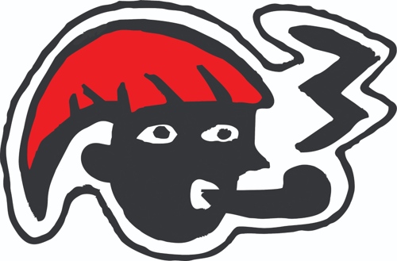

LABIRINTO DO CURUPIRA
Entre na mata e encontre a saída
O Curupira protege a floresta e confunde os caminhos de quem pretende destruí-la. Use o dedo, o mouse ou as setas do teclado para percorrer o labirinto. Sua missão é sair sem atravessar as paredes.